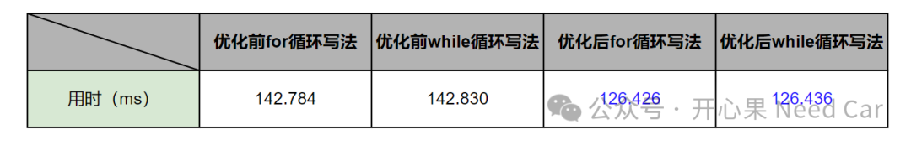

开心果 Need Car · 2024-05-12T08:28:00+08:00 · 微信原文
1、for循环问题举例
for (; CmacData.leftDataLen > 16; ){AesCmac_Cal128BitLen(addressIn);addressIn += 16U;CmacData.leftDataLen -= 16U;}
while (CmacData.leftDataLen > 16){AesCmac_Cal128BitLen(addressIn);addressIn += 16U;-= 16U;}
= OsTimer0_GetTicks();for (; CmacData.leftDataLen > 16; ){AesCmac_Cal128BitLen(addressIn);addressIn += 16U;-= 16U;}= OsTimer0_GetTicks() - TimeArr[0];
2、减少for循环，提升效率
while (CmacData.leftDataLen > 64){AesCmac_Cal128BitLen(addressIn);AesCmac_Cal128BitLen(addressIn+16);AesCmac_Cal128BitLen(addressIn+32);AesCmac_Cal128BitLen(addressIn+48);addressIn += 64U;-= 64U;}
用时：7586131Ticks，即：126.436ms。
修改for代码如下所示：
for (;CmacData.leftDataLen > 64;){AesCmac_Cal128BitLen(addressIn);AesCmac_Cal128BitLen(addressIn+16);AesCmac_Cal128BitLen(addressIn+32);AesCmac_Cal128BitLen(addressIn+48);addressIn += 64U;-= 64U;}
用时：7585583Ticks，即：126.426ms。
统计对比如下：

所以，遇到for循环时，可以适当放大判断的颗粒度。
往期精彩回顾